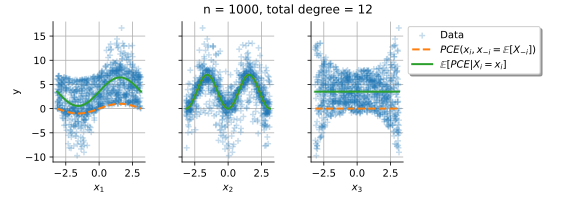

DrawPairsXY¶
(Source code, svg)
{kind=link}
- DrawPairsXY(sampleX, sampleY)¶
Draw 2-d projections between marginals of two samples.
- Parameters:
- sampleX2-d sequence of float
First sample.
- sampleY2-d sequence of float
Second sample. It must have the same size as the first sample.
- Returns:
- graph
GridLayout The graph object
- graph
Notes
This method allows one to draw the relationships between the margins of two samples. This consists of a collection of 2-d projections of the marginals of sampleY (in lines) with respect to the marginals of sampleX (in columns). The point style is given by the ‘Drawable-DefaultPointStyle’ key in the
ResourceMap. The color is given by the first individual color in the default palette.Examples
>>> import openturns as ot >>> from openturns.viewer import View >>> ot.RandomGenerator.SetSeed(0) >>> dim = 3 >>> R = ot.CorrelationMatrix(dim) >>> R[0, 1] = 0.8 >>> distribution = ot.Normal([3.0] * dim, [2.0]* dim, R) >>> size = 100 >>> sampleX = distribution.getSample(size) >>> sampleY = distribution.getSample(size) >>> clouds = ot.VisualTest.DrawPairsXY(sampleX, sampleY) >>> View(clouds).show()
Examples using the function¶
Visualize pairs between two samples
Visualize pairs between two samples

Estimate Sobol' indices for the Ishigami function by a sampling method: a quick start guide to sensitivity analysis

Conditional expectation of a polynomial chaos expansion
Conditional expectation of a polynomial chaos expansion

Create a polynomial chaos for the Ishigami function: a quick start guide to polynomial chaos
Create a polynomial chaos for the Ishigami function: a quick start guide to polynomial chaos